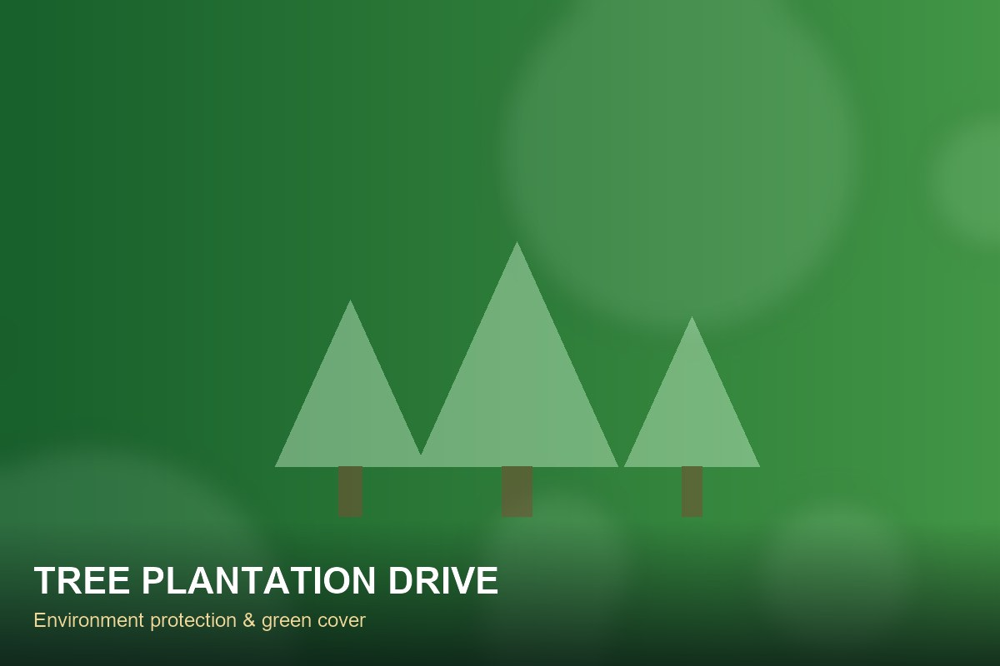

Activities & Programs
On-ground community initiatives where your support transforms into real impact.
What We Run on the Ground
Each programme is designed around our registered objectives and delivered with local volunteers and community partners.

Educational Support Drives & Literacy
Distribution of books, stationery kits and learning material, evening study guidance and literacy campaigns across rural Samastipur.

Free Medical & Health Check-up Camps
Periodic health camps with free basic diagnostics, medicine distribution, and informative sessions on hygiene and wellness.

Food, Clothing & Essential Distribution
Ration kits, warm blankets, clothing and daily essentials delivered to vulnerable families facing hardship and seasonal distress.

Tree Plantation & Eco Protection
Community plantation events, sapling care drives, clean drinking water drives, and awareness campaigns on local sanitation.

Women Skill Development Workshops
Self-reliance workshops covering tailoring, handicrafts, digital literacy, and micro-livelihood skills for rural women.
Start a Drive in Your Area
Partner with us as a volunteer or community coordinator to bring these welfare drives to your village, block or ward.
Partner With UsFrom Our Gallery
Explore photos and media from our field drives and volunteer camps.